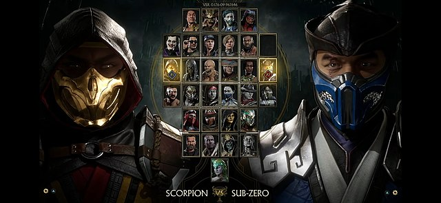
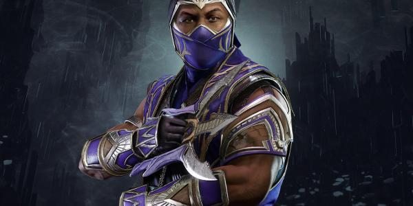
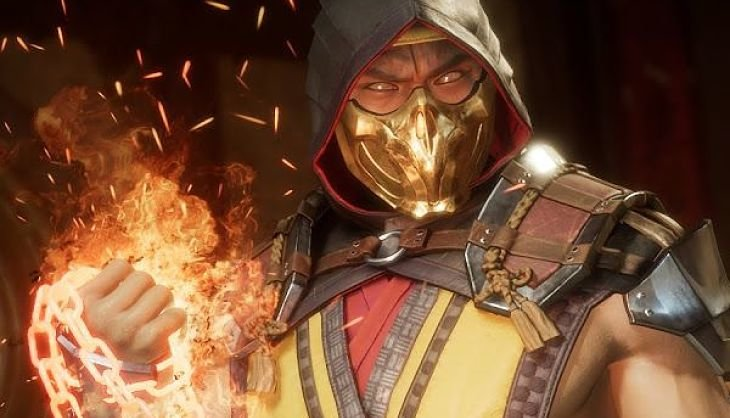
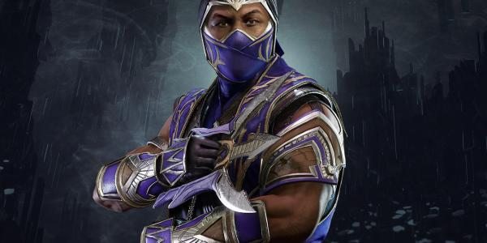
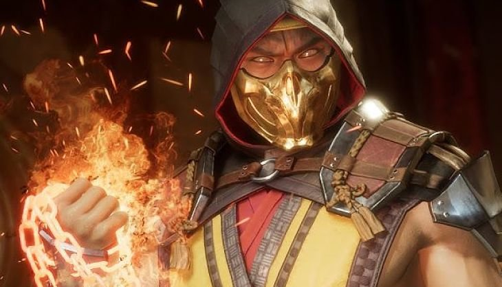
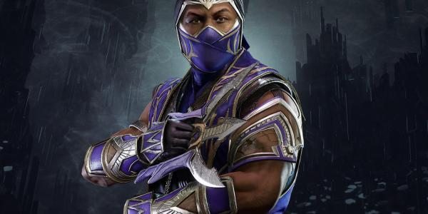
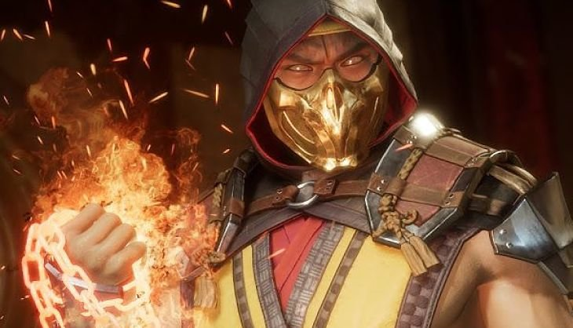

 





Mortal Kombat (comúnmente abreviado MK) es una franquicia de videojuegos de lucha creada por Ed Boon y John Tobias en 1992. Las cuatro primeras entregas fueron distribuidas por Midway Games y lanzadas principalmente en máquinas arcade; posteriormente estuvieron disponibles en consolas domésticas.